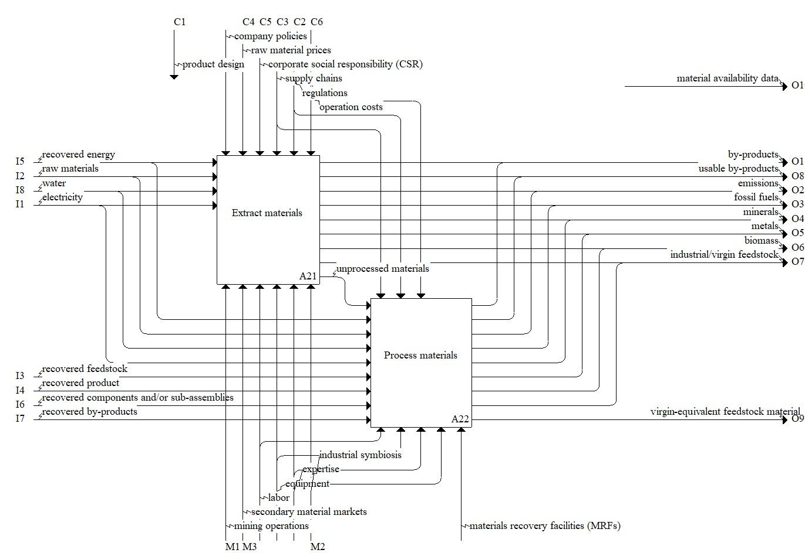

Description
The material acquisition stage model consists of activities that are relevant to acquiring the material needed for production. A key difference for the material acquisition stage within a circular economy model is the existence of a supply stream of materials, products, and energy, along with associated information, that recirculates into the value chain from downstream life cycle stages (e.g., end-of-life). Click the individual Concepts for descriptions and examples of inputs, outputs, controls, and mechanisms relevant to a circular economy.Parent Activity: Acquire Materials